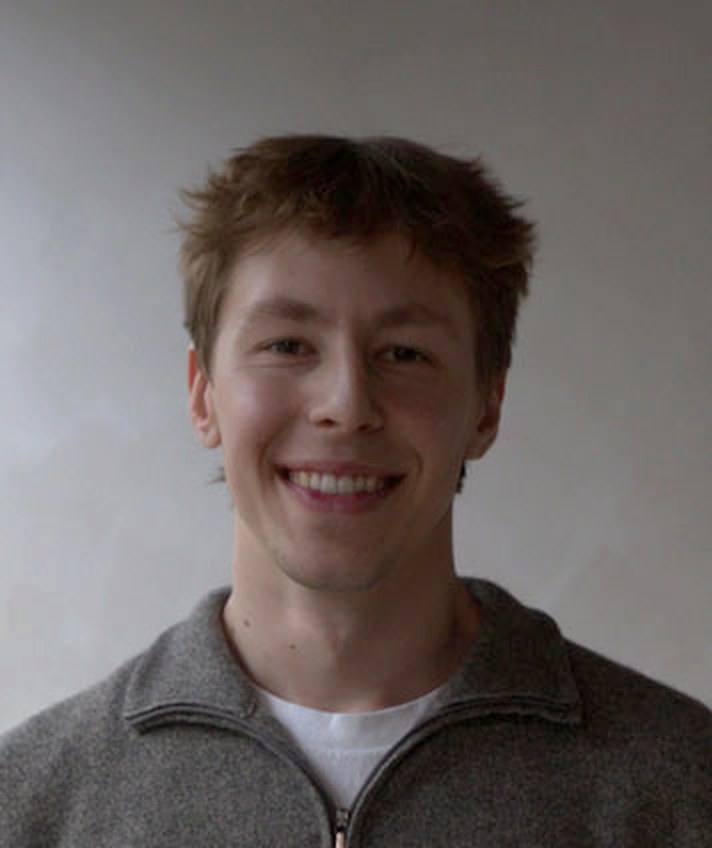

Studio NEWO
Studio NEWO is an industrial design practice in Toronto, making furniture, lighting, and objects out of raw materials and current technology, built to be opened, repaired, and kept. Working is the minimum. How a product feels, looks, gets made, fixed, and eventually taken apart is the actual goal.

Owen Palmer, designerI came to industrial design from two years of mechanical engineering, and I still often think like an engineer: solving problems and rendering designs in my head before modelling them. I want to create products and develop solutions that bring the most value to as many people as possible.
Spatial prototyping
Design ideation gets resolved in CAD, then moves quickly to a physical prototype where interlocks, tolerances, and structure are finalized in real material.
Constraint-driven form
Form often follows the way a thing is made. The fabrication method, the material, and the hand using it set the boundaries.
Pragmatism and value
Every part and every line of code should earn its place. If it does not improve how the product works, how long it lasts, how it looks, or how it feels, it is unnecessary.
Lifecycle
Products are designed for their whole life, not just the sale. Fasteners, materials, and sub-assemblies are chosen so parts can be swapped out, repaired, or replaced, and to be more sustainable than the alternatives.
- Founder and designer, Studio NEWOToronto, 2024 to presentProducts designed and built end to end, from concept to working prototype: furniture, lighting, audio. Embedded firmware written in house (C++ on ESP32, LED matrices, mmWave radar).
- Project assistant, Wood by DesignPeterborough, 2024 to 2026Led assembly, finishing and on-site installation of custom furniture and cabinetry. Prepared CAD files for CNC cutting and contributed to design decisions.
- Leak survey technician and GIS assistant, QSP GeographicsOttawa, 2023Field survey work with gas-detection equipment, and mapping of the survey data in GIS.
- CADSolidWorks, Onshape
- FabricationCNC, laser, 3D printing, welding, lathe, mill
- Electronics and firmwareESP32, C++ / Arduino
- MaterialsWood, metal, plastic, foam, leather, vinyl
- 3D scanning and ARPhotogrammetry, AR integration
- Software and webPhotoshop, Illustrator, XD, SketchUp, HTML / CSS / JS, Three.js
- NAF, IDS Toronto2025
- LOOTS, Design for Disassembly Exhibition2025
- First place, design-day competition, University of OttawaTwo years running
- Industrial Design, OCAD UniversityToronto, 2024 to 2027
- Mechanical Engineering, University of Ottawa2021 to 2023